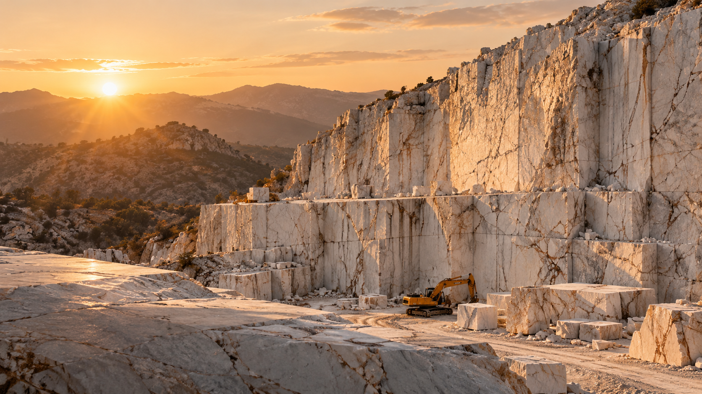

Doğal Taşa Değer Katan Tasarımlar
Seçkin doğal taşları modern tasarım ve güçlü işçilikle buluşturuyoruz.
Mermer
Estetiğin doğal hali
Granit
Güçlü ve dayanıklı yüzeyler
Porselen
Modern yaşam alanları için
Özel Projeler
Mekana özel estetik çözümler

DOĞADAN GELECEĞE
POSUS MERMER
Doğal Taşta
Doğal Taşta
Güvenilir Çözüm Ortağınız
Mermer, granit ve porselen ürünlerinde kaliteli malzemeyi güçlü işçilikle buluşturuyor; yaşam alanları ve projeler için estetik ve uzun ömürlü çözümler üretiyoruz.
Üst Kalite
Özenle seçilmiş doğal taşlar
Uzman Üretim
Deneyimli ekip ve güçlü işçilik
Özel Çözümler
Projeye ve ölçüye özel üretim
DOĞAL TAŞLA
DAHA İYİ BİR YARIN
DAHA İYİ BİR YARIN
30+
Yıllık Tecrübe
500+
Tamamlanan Proje
%100
Müşteri Memnuniyeti